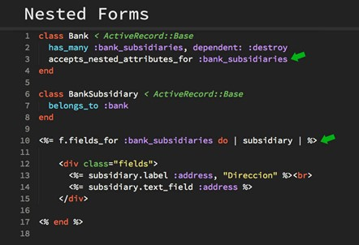

Tarea 15 - Ruby
Tipos de datos comunes a cualquier idioma
- Cadena "abc"
- Número 123123
- Matriz. Matriz [1,2,3]
- Hash #Objeto similar a js, clave: valor
"name": "dashi",
"birth": "1982-9-16"
Método
Puede definir un método que acepte parámetros de la siguiente manera:
def method_name (var1, var2)
expr..
end
Puede establecer un valor predeterminado para el parámetro y usar el valor predeterminado si el parámetro requerido no se pasa cuando se llama al método:
def method_name (var1=value1, var2=value2)
expr..
end
Cuando desee llamar a un método, solo necesita usar el nombre del método, como se muestra a continuación:
method_name 25, 30
La mayor desventaja de usar métodos de parámetros es que necesita recordar la cantidad de parámetros al llamar al método. Por ejemplo, si pasa solo dos parámetros a un método que acepta tres parámetros, Ruby mostrará un error.
def test(a1="Ruby", a2="Perl")
pone "El lenguaje de programación es # {a1}"
pone "El lenguaje de programación es # {a2}"
end
prueba "C", "C ++" # El lenguaje de programación es C, el lenguaje de programación es C ++,
prueba # El lenguaje de programación es Ruby, el lenguaje de programación es
Cada método en Ruby devuelve un valor por defecto. El valor devuelto es el valor de la última declaración.
Bloques y funciones
Cuando el método se define fuera de la clase, el método se marca como privado de forma predeterminada. Por otro lado, si el método está definido en la clase, se marca como público por defecto.
El público o el privado del módulo pueden cambiar la visibilidad predeterminada y la marca privada del método.
Cuando desee acceder a los métodos de una clase, primero debe crear una instancia de la clase. Luego, usando el objeto, puede acceder a cualquier miembro de la clase.
Definir una función y llamar
def test
puts "hello ruby"
end
test # => hello ruby
Paradigma
Ruby utiliza muy bien el paradigma de POO, así que estas variables son privadas y no pueden verse desde fuera de la clase. Podemos decir que toda la comunicación que hay entre objetos se hace con los métodos. Además de los objetos, en Ruby encontramos módulos.
Descargar Ruby aquí
